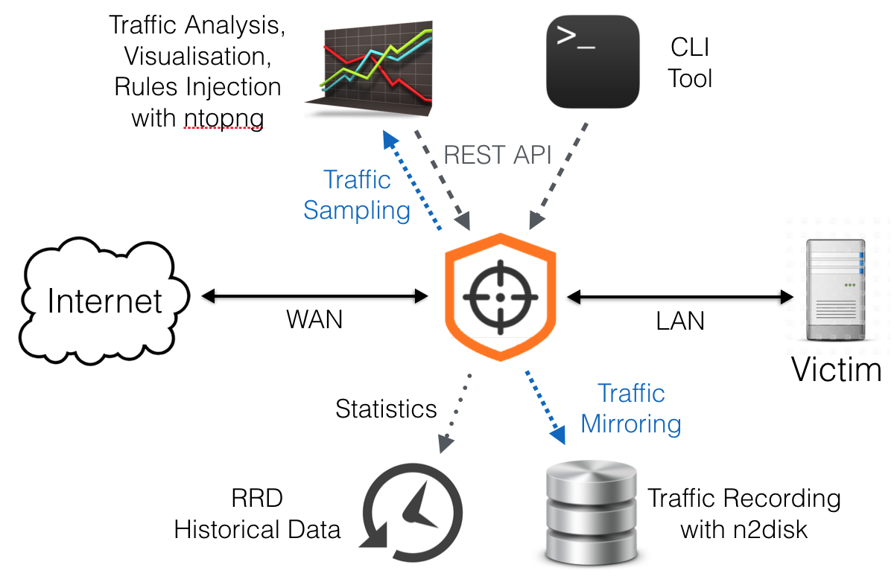

Основные характеристики
Обеспечение соблюдения правил дорожного движения
TCP проверка сессий
Динамический белый список с истечением срока действия при успешной проверке сеанса
Определяемый пользователем белый/черный список/серый список исходных подсетей с обозначением CIDR
Политики приема/отбрасывания, подобные ACL, на основе порта UDP/TCP, типа ICMP и т. д.
Другие политики удаления, основанные на значениях IP TTL, размере полезной нагрузки UDP, фрагментах и т. д.
DNS SLIP-подобные проверки: принудительно TCP и т. д.
Смягчение атак усиления на основе UDP.
Фильтрация на основе сигнатур (смещение и строка)
HTTP фильтрация по имени/содержимому элементов запроса.
Регулирование трафика: пакеты ниже порогового значения пересылаются, в противном случае они отбрасываются. Это гарантирует, что исходящая скорость нежелательного трафика будет ограничена определенным значением. Возможность указать скорость в зависимости от протокола и источника или пункта назначения.
Средства проверки трафика реализованы в виде плагинов с чистым API, что позволяет создавать больше средств проверки для конкретных протоколов.
Мультиарендность
Входящий трафик разделяется на несколько виртуальных средств защиты в зависимости от IP-адреса назначения. Таким образом, можно указать политику ограничения трафика для каждой подсети назначения.
Каждый виртуальный митигатор привязан к профилям контроля трафика: по умолчанию, белый, черный, серый. Каждый профиль содержит конфигурацию контроля трафика (например, проверка SYN=да, ICMP Drop=No) и применяется к исходным IP-адресам в соответствии со списками (белый/черный/серый).
Глобальный режим или режим обхода для каждого пункта назначения

Видимость трафика
Статистика сбрасывается до RRD для сохранения истории тенденций трафика.
Возможность отправлять выборочный/полный хороший/плохой/весь трафик на внешние виртуальные устройства (например, для анализа трафика или дампа).
Аппаратное ускорение и масштабируемость
Поддержка аппаратного обхода NIC (Silicom): гарантирует, что nScrub не окажет влияния на инфраструктуру в случае сбоя оборудования.
Балансировка нагрузки между ядрами с использованием HW RSS или специального программного распределения.
пользовательский интерфейс
REST API для перенастройки двигателя на ходу
CLI инструмент с автозаполнением
